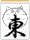

むかし麻雀荘といえば、セット客専門であった。しかし昭和40年代の後半になって、フリー雀荘と呼ばれるリーチ麻雀店が誕生した。リーチ麻雀店では、その店のルール・システムにしたがってゲームが行われる。見知らぬ者同士でも、ややこしい打ち合わせ無しでゲームできる。４人そろわなくても、店に足を向けさえすれば打ちたいときに打てる。まことに結構な話。しかしそこで行われているのは、相変わらずジャンブル。お巡りさんのお目こぼしが必要である。
もちろんノーレート麻雀は昔から存在する。それが世に言う競技麻雀。しかし競技麻雀を主催するのは麻雀団体や麻雀サークルであって麻雀荘ではない。麻雀荘は団体にゲームの場所を提供するだけ。そこでノーレート麻雀を楽しもうと思えば、どこかの団体やサークルに参加するしかない。
その中で近年、新しい潮流が生まれつつある。それがノーレートのフリー雀荘。本邦初、いや世界初のノーレート卓オンリーのフリー雀荘は、埼玉県大宮市のＳＰロッキーというお店。それ以後、ノーレート麻雀を志向する麻雀荘がいくつか誕生している。しかしノーレートの麻雀荘といっても、まだ揺籃期。そこでさまざまなタイプのお店がある。
（Ａ）ノーレートオンリー。（Ｂ）ノーレート店であるが、セット（貸し卓）も受け入れている。（C）ノーレート卓とレート卓（店設定のレートにより、お客同士の精算がある）の併営。（D）レート雀荘であるが、曜日を決めてノーレート大会を実施している。さらに（E）セット店であるが、定期的にノーレート麻雀会など実施している、 などさまざま。
いずれもノーレートに携わっているお店として、まことに喜ばしい。しかしどこかに線を引く必要がある。もとよりに（Ａ）タイプのお店は問題ない。（B）タイプの場合、セットも受け入れていてもハウスとしてはノーレート。そこでこのカテゴリーの対象は（A）（B）タイプとする。※紹介は、たまたまσ(-_-)が知った順。
ここに紹介したお店以外のノーレートのフリー雀荘（Ａ・Ｂタイプ）をご存知の方、ぜひ教えてください。
収録店は1'2008.04.04現在
|
（01）さいたま市
|
(02)松山市
|
(03)大阪市
いどたさん、情報ありがとう(^-^)/
|
(04)渋谷区道玄坂

|
(05)渋谷区
|
(06)足立区
Ｏ．５カラット
|
(07)豊島区
|
(08)大阪市
梅田 趣味の会
|
(09)京都市

京都 趣味の会（女性専用）
|
（10）新潟県新潟市
新潟けんこう麻雀教室
|
（11）東京都下北沢
シャングリラ
るるちさん、情報ありがとう(^-^)/
|
|
|
（13）東京都千代田区
|
(14)東京都渋谷区
"11.06
|
(15)名古屋市中村区
"12.09
厳密にはノーレート＋フリー雀荘のカテゴリには属さないが、いまどき希少な貸し卓（セット客）専門雀荘（卓割れしたといって店員がメンツに入ったり、別の卓を案内することもない）。
店内は落ち着いた雰囲気で卓間もゆったり。個室は まるで料亭レベル。
併設された立駐は、ナゴヤ駅駅近くなのに完全無料。
いたく気に入ったので、さっそく会員になった。(^-^；
|
（16）さいたま市岩槻区
"13.2.26
赤牌使用の一般ルール店
小栗賢二さん、情報ありがとう(^^)/
|